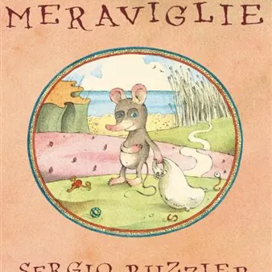

da ven 27 nov a dom 29 nov
Polverone, tre giorni di libri illustrati al Borarium: Sergio Ruzzier presenta “La camera delle meraviglie”
Il 27 novembre Sergio Ruzzier, l’illustratore che dalle pagine di “Linus” è arrivato a New York e al Premio Andersen, presenta al Museo della Bora la storia di Pio Pelosi, un topo che colleziona le cose perdute dagli altri. Con due laboratori, fino al 29 novembre, e la mostra…
 Indicazioni
Indicazioni
- Costi e prenotazioni
- Costo non indicato · Prenotazione non indicata
- Programma
- Programma da verificare. Apri la fonte ufficiale per orari e possibili aggiornamenti.
- In caso di maltempo
- Nessuna indicazione specifica pubblicata.
- Note
- Acquisito automaticamente dalla fonte.
L’EVENTO
Descrizione completa
Il 27 novembre Sergio Ruzzier, l’illustratore che dalle pagine di “Linus” è arrivato a New York e al Premio Andersen, presenta al Museo della Bora la storia di Pio Pelosi, un topo che colleziona le cose perdute dagli altri. Con due laboratori, fino al 29 novembre, e la mostra degli originali di “Pretesti”, aperta fino a fine dicembre. Ingresso libero.
Illustratore e autore, Ruzzier ha esordito negli anni Ottanta con le strisce su “Linus”, ha lavorato a lungo a New York e nel 2023 ha ricevuto il Premio Andersen come protagonista della cultura per l’infanzia.
A Trieste Ruzzier arriva anche per una storia di famiglia.
La rassegna prende il nome da un vento inventato da Tonino Guerra : il Polverone , che una o due volte ogni cent’anni sale dal fondo della Valle dei Crateri e per tre giorni cancella la memoria di tutti. Poi il vento cessa e nessuno ricorda ciò che è accaduto. Polverone nasce grazie alla sensibilità e alla passione di Diletta Colombo, libraia, curatrice e co-fondatrice della libreria milanese VolumeBK, e di Marta Sironi , storica dell’arte e della grafica, curatrice di mostre e autrice, per Topipittori, di libri che raccontano l’arte ai ragazzi, con la complicità di Simone Volpato, studioso e libraio della Libreria Antiquaria Drogheria 28. Il progetto è reso possibile dai bandi “divulgazione scientifica” e “attività musei 2026” della Regione Autonoma Friuli Venezia Giulia . Di tanto in tanto i refoli del museo si insinueranno tra le pagine di ieri e di oggi, perché il vento e i libri, si sa, sono grandi amici.
Venerdì 27 novembre
Ore 18: presentazione di “ La camera delle meraviglie ” con Sergio Ruzzier
Ore 18.30: inaugurazione della mostra “Pretesti”
Sabato 28 novembre
Ore 10.30: “ La giungla nel vento ”, laboratorio con Diletta Colombo e Marta Sironi
Ore 16: “ L ’ aria è quella cosa leggera ”, con Simone Volpato, Marta Sironi e Sergio Ruzzier
Domenica 29 novembre
Ore 10.30: “ Pretesti per un laboratorio ”, con Sergio Ruzzier
Ingresso libero.
Il laboratorio di domenica è per un massimo di 20 partecipanti dai 16 anni in su; per partecipare agli incontri di sabato e domenica si richiede la prenotazione scrivendo a: museobora@gmail.com .
La mostra “Pretesti” resta aperta per tutto il mese di dicembre, dalle 16 alle 18, tutti i giorni tranne mercoledì e domenica
IL PROGRAMMA
Programma e orari
Appuntamenti raccolti dalle fonti elencate. Dove manca un orario, non è ancora disponibile in questa scheda.
Programma pubblicato
- Ore 18.30: inaugurazione della mostra “Pretesti”
- Ore 10.30: “
INFORMAZIONI UTILI
Prima di partire
- Controllare la fonte prima di partire.
ORGANIZZAZIONE